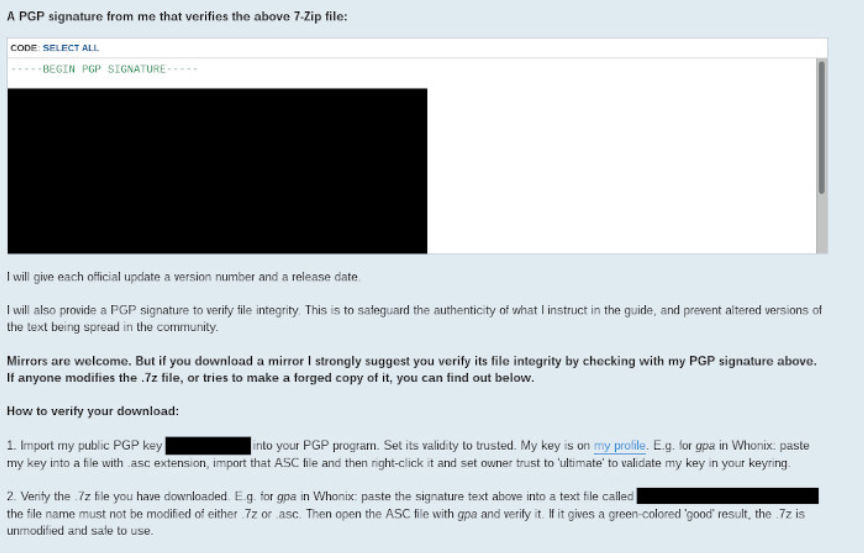
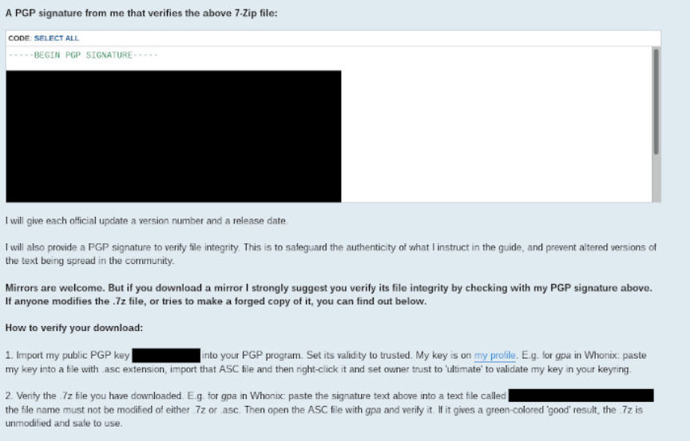

Pedophiles are Upgrading their OPSEC Guides on Darkweb Forums
Security guides from various Internet criminal communities aren’t all that uncommon. Over the years we have seen such guides posted onto drug forums, hacking forums, extremism forums, and well child abuse forums. Two weeks ago on one of the larger forums an account posted a security guide that is catered towards Internet child abuse offenders. This one specifically is an iteration to an older guide and is provided as HTML pages that the user is able to navigate offline.
Overall it contains what you would expect out of any other Whonix guide you would find on the Internet. Being that Whonix is at it’s core a security focused operating system, any introduction to it is going to inherently be very security focused. Many will say that using Tor is super easy, just download the software and you’re off to the races. While that is true, where do you go next, where do you find websites to visit? The point being anyone who actually wants to use Tor is most likely going to Google it and stumble upon similar guides.
But regardless of it’s content not being anything special, it is significant because it’s another glimpse into the determined effort made by this group to stay secure. For far to long many experts haven’t taken these higher level organized Internet child abuse groups seriously, and we have seen it show by the gargantuan amount of child abuse imagery being discovered by law enforcement around the world currently. While it is accurate that the majority of child abuse content is hosted on clearnet servers, for download speed purposes, the aggregation and curation of all of that happens within these darknet abuse forums. Which has taken us to a point where we are essentially playing whack-a-mole chasing clearnet criminals while the main culprits of the problem continue to operate on the darknet.
The number from NCMEC that 90% of the reports it received in 2018 were from Facebook was one hell of a revelation. But it’s not all that surprising, at the moment Facebook out of all social media websites probably has the most advanced technology in production to detect such content. They also probably have the most global user base out of all the social media companies, the Coke-A-Cola of technology. These reports would have come from all over the world, not just the United States. Also, Facebook being an American company, all of it’s reports go to NCMEC essentially by default. This is relevant to understand because it would be wrong to conclude that because Facebook reports the most, it actually contains the most as well. Surely the simplest conclusion is that it only contains the most out of those who have reported to NCMEC for that year. While they did mention uniqueness which could point to Facebook being the first place of upload for that content, that is very unlikely. It is out of the scope of this piece but they’re various factors that could point to why that number was discovered. I don’t distribute the number, I believe it’s accurate, but again remember that aren’t scanning everything on the Internet.
Understanding how these communities exist and operate is essential in preventing it from making its way to the clearnet level on a widely available platform like Facebook. I’d even argue that it’s somewhat from lack of pressure, take down, and action against these darknet communities that has allowed for the increase of availability found on the clearnet currently. And it will be crucial in the coming years for law enforcement to approach this problem with an understanding of it’s organized nature.
Obviously, in this context playing whack-a-mole is very much worth it in an effort at saving children from the hands of abusers. But at the same time, we need to give sufficient attention to the so called head of this monster that is child abuse imagery online so that we can work to lower the amount of availability of it on the Internet. Part of that work is understanding the operation and sophistication that is used by the main group of distributors and organizers. Thus an understanding of the kinds of software tools used by such actors can only help to further that endeavor.
Note: I have redacted parts from the screenshots that might assist someone attempting to find this through searches. I sought to locate this guide via searches on the clearnet and was unsuccessful. If I had been successful I would have withheld from publishing this.
Overall it contains what you would expect out of any other Whonix guide you would find on the Internet. Being that Whonix is at it’s core a security focused operating system, any introduction to it is going to inherently be very security focused. Many will say that using Tor is super easy, just download the software and you’re off to the races. While that is true, where do you go next, where do you find websites to visit? The point being anyone who actually wants to use Tor is most likely going to Google it and stumble upon similar guides.
A Screenshot of a Guide Introducing Whonix
But regardless of it’s content not being anything special, it is significant because it’s another glimpse into the determined effort made by this group to stay secure. For far to long many experts haven’t taken these higher level organized Internet child abuse groups seriously, and we have seen it show by the gargantuan amount of child abuse imagery being discovered by law enforcement around the world currently. While it is accurate that the majority of child abuse content is hosted on clearnet servers, for download speed purposes, the aggregation and curation of all of that happens within these darknet abuse forums. Which has taken us to a point where we are essentially playing whack-a-mole chasing clearnet criminals while the main culprits of the problem continue to operate on the darknet.
The number from NCMEC that 90% of the reports it received in 2018 were from Facebook was one hell of a revelation. But it’s not all that surprising, at the moment Facebook out of all social media websites probably has the most advanced technology in production to detect such content. They also probably have the most global user base out of all the social media companies, the Coke-A-Cola of technology. These reports would have come from all over the world, not just the United States. Also, Facebook being an American company, all of it’s reports go to NCMEC essentially by default. This is relevant to understand because it would be wrong to conclude that because Facebook reports the most, it actually contains the most as well. Surely the simplest conclusion is that it only contains the most out of those who have reported to NCMEC for that year. While they did mention uniqueness which could point to Facebook being the first place of upload for that content, that is very unlikely. It is out of the scope of this piece but they’re various factors that could point to why that number was discovered. I don’t distribute the number, I believe it’s accurate, but again remember that aren’t scanning everything on the Internet.
A Screenshot of a Guide Explaining PGP Signatures
Understanding how these communities exist and operate is essential in preventing it from making its way to the clearnet level on a widely available platform like Facebook. I’d even argue that it’s somewhat from lack of pressure, take down, and action against these darknet communities that has allowed for the increase of availability found on the clearnet currently. And it will be crucial in the coming years for law enforcement to approach this problem with an understanding of it’s organized nature.
Obviously, in this context playing whack-a-mole is very much worth it in an effort at saving children from the hands of abusers. But at the same time, we need to give sufficient attention to the so called head of this monster that is child abuse imagery online so that we can work to lower the amount of availability of it on the Internet. Part of that work is understanding the operation and sophistication that is used by the main group of distributors and organizers. Thus an understanding of the kinds of software tools used by such actors can only help to further that endeavor.
Note: I have redacted parts from the screenshots that might assist someone attempting to find this through searches. I sought to locate this guide via searches on the clearnet and was unsuccessful. If I had been successful I would have withheld from publishing this.